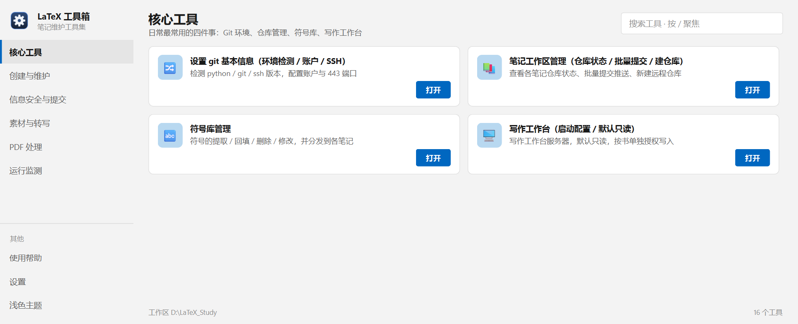

LaTeX 工具箱 · 帮助
每个工具一页，讲清「什么时候用、界面怎么填、文件落在哪、出问题怎么办」。看完整篇仍解决不了，就到 Tools/README.md 里找对应的源码说明。

左侧按用途分组，右侧是当前组的工具卡片；右上角搜索框按 / 聚焦。
| 工具 | 一句话 |
|---|---|
| 1. 设置 git 基本信息 | 检测 git / ssh 环境、配置提交身份、配好 GitHub 的 SSH 通道。三件事都只在换机器或首次配置时做一次。 |
| 2. 笔记工作区管理 | 一眼看完所有笔记仓库的状态，批量提交推送，或把还没入库的文件夹建成仓库。 |
| 3. 符号库管理 | 在模板与各笔记之间搬运符号定义、刷新 TeXStudio 补全、删除或新增记号。默认只预览，不写文件。 |
| 4. 写作工作台 | 在本机起一个浏览器界面来写作与预览：左边目录、右边正文，改动直接写回 .tex。默认只读，写入要按书单独授权。 |
| 工具 | 一句话 |
|---|---|
| 5. 新建笔记 | 从一个模板目录复制骨架、清掉模板里的测试内容、按大纲生成章节、初始化 git。默认只预演。 |
| 6. 大纲工具 | 三种事：校验已有大纲 md 的层级是否自洽、从一本笔记反向导出大纲、把缩进清单转成规范 md。 |
| 7. 单本笔记工具 | 对某一本书做三件事：提交推送、切换习题编排模式、补导引与小结的骨架。 |
| 8. 清理编译产物 | 删掉 aux / log / synctex 这类可再生的中间文件。只在「有 .tex 源」的目录里动手。 |
| 工具 | 一句话 |
|---|---|
| 9. 仓库体检 | 一次看完：规范副本是否一致、有没有误跟踪编译产物、哪些仓库还有未提交改动。 |
| 10. 本机信息扫描 | 提交前最后一道关：扫一遍暂存内容里有没有本机路径、用户名、密钥、专有词。 |
| 11. 配置路径检查与修复 | 逐个检查各工具配置里的路径是否还有效（换了电脑、挪了目录之后特别有用），并可一键改成正确值。 |
| 12. 提交本工具集 | 把 Tools/ 这个仓库 add → commit → push。默认预演，看到文件清单再决定。 |
| 14. 项目规范副本一致性 | 比对工作区根的 项目规范.md 与各仓库里的副本是否逐字节一致，并把原件同步过去。 |
| 工具 | 一句话 |
|---|---|
| 13. 视频转文字 | 给一个视频链接，优先取字幕；没有字幕就用本地 whisper 转写。产物按合集归档，可断点续做。 |
| 工具 | 一句话 |
|---|---|
| 15. PDF 转正 | 把「横版课件被打印成 A4 纵向、内容转了 90°」的 PDF 裁白边、转成 16:9，不重新编码。 |
| 工具 | 一句话 |
|---|---|
| 16. 笔记目录监测 | 盯着一个仓库，有改动就自动提交推送，并按条数上限裁剪历史，让提交记录不无限增长。 |
Tools/logs/_panel_error.log，安装版在 %LOCALAPPDATA%\LaTeX-Toolbox\logs\。